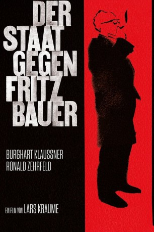
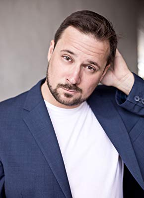

#7058 Der Staat gegen Fritz Bauer
 
 IMDB-Wertung: 7.1 / 10
IMDB-Wertung: 7.1 / 10  Metascore: 0
Metascore: 0 
Deutschland 1957. Während die junge Bundesrepublik die NS-Zeit hinter sich lassen will, kämpft ein Mann unermüdlich dafür, die Täter im eigenen Land vor Gericht zu stellen: Zwölf Jahre nach Kriegsende erhält der kompromisslose Generalstaatsanwalt Fritz Bauer den entscheidenden Hinweis darauf, wo sich der frühere SS-Obersturmbannführer Adolf Eichmann versteckt halten soll. Gemeinsam mit dem jungen Staatsanwalt Karl Angermann beginnt Bauer, die Hintergründe zu recherchieren. Doch es formiert sich Widerstand bis in die höchsten Kreise: In seiner eigenen Behörde verschwinden immer wieder Akten und auch Oberstaatsanwalt Ulrich Kreidler und BKA-Mitarbeiter Paul Gebhardt behindern den unliebsamen Bauer in seinen Ermittlungen. Ein scheinbar aussichtsloser Kampf gegen unsichtbare Gegner beginnt, doch Bauer und Angermann geben nicht auf, wohl wissend, dass ihnen die Jagd auf Eichmann sowohl beruflich als auch privat alles abverlangen wird.
Jahr: 2015
Dauer: 104 Minuten
FSK: 12
Land: Deutschland Studio: Alamode FilmTonspuren:
Untertitel:
Auflösung: 1080p (1920x808) Größe: 3624 MB
Genre: Thriller, Drama, Biographie
Regisseur: Lars Kraume
Drehbuch: Lars Kraume
Soundtrack:
Darsteller:
 Burghart Klaußner als Fritz Bauer
Burghart Klaußner als Fritz Bauer Sebastian Blomberg als Ulrich Kreidler
Sebastian Blomberg als Ulrich Kreidler Michael Schenk als Adolf Eichmann
Michael Schenk als Adolf Eichmann Pierre Shrady als Eberhard Fritsch
Pierre Shrady als Eberhard Fritsch Götz Schubert als Georg August Zinn
Götz Schubert als Georg August Zinn Laura Tonke als Fräulein Schütt
Laura Tonke als Fräulein Schütt Arndt Schwering-Sohnrey als Staatsanwalt Kügler
Arndt Schwering-Sohnrey als Staatsanwalt Kügler Daniel Krauss als Staatsanwalt Vogel
Daniel Krauss als Staatsanwalt Vogel Ronald Zehrfeld als Karl Angermann
Ronald Zehrfeld als Karl Angermann Stephan Grossmann als Staatsanwalt Jankowski
Stephan Grossmann als Staatsanwalt Jankowski- Christopher Buchholz als Lothar Hermann
- Lilith Stangenberg als Victoria
- Cornelia Gröschel als Charlotte Angermann
- Robert Atzorn als Hans Jasper
 Paulus Manker als Friedrich Morlach
Paulus Manker als Friedrich Morlach- Dani Levy als Chaim Cohn
 Matthias Weidenhöfer als Zvi Aharoni
Matthias Weidenhöfer als Zvi Aharoni- Fritz Bauer als Himself , archive footage, uncredited
- David Ben-Gurion als Himself , archive footage, uncredited
- Rüdiger Klink als Heinz Mahler
- Andrej Kaminsky als Polizeibeamter
- Jörg Schüttauf als Paul Gebhardt
- Carolin Stähler als Frau Kreidler
- Stefan Gebelhoff als Willem Sassen
-  Nikolai Will als Staatsanwalt Warlo
- Lavinia Kiesler als Silvia Hermann
- Nicole Johannhanwahr-Balk als Vera Eichmann
- Heike Thiem-Schneider als Frau Hermann
- Tilo Werner als Isser Harel
- Jochen Kolenda als Richter
- Hajo Tuschy als Redakteur
- Caroline Frier als Maria
- Nicola Thomas als Eva Jasper
- Nikolaus Benda als Bernhard Jasper
- Anna von Haebler als Junge Frau
- René Heinersdorff als Herr Schneider
- Thomas Kügel als Dr. Erwin Schüle
- Karl Kraume als Zeitungsjunge
- Konrad Adenauer als Himself , archive footage, uncredited
- Bartosch Lewandowski als Journalist , uncredited
- Gabriele Schulze als Margot Tiefenthal , uncredited
Datei: X:\2015(N-Z)\Staat gegen Fritz Bauer, Der (2015, FSK12, 1920x808).mkv seit 21.09.2017
Festplatte: HD 2015(A-Z)
 Es gibt insgesamt 161 Filme in der Gruppe '2015(N-Z)'
Es gibt insgesamt 161 Filme in der Gruppe '2015(N-Z)'